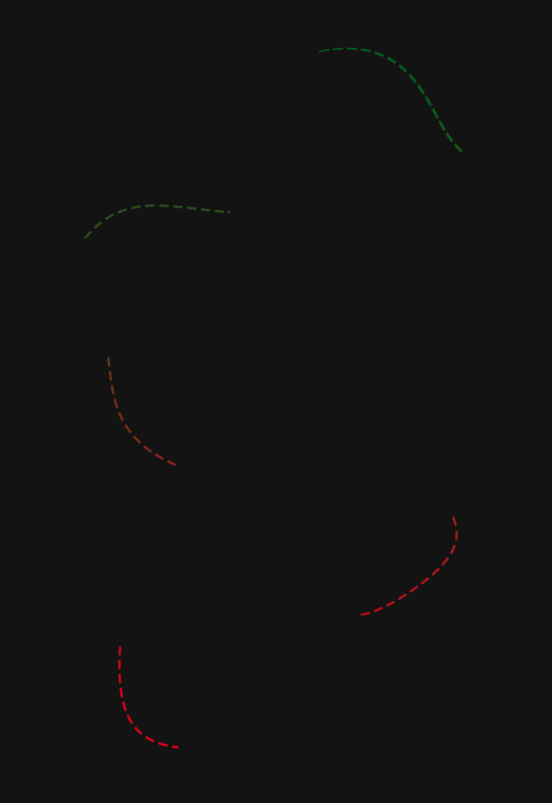
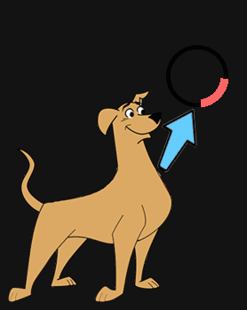
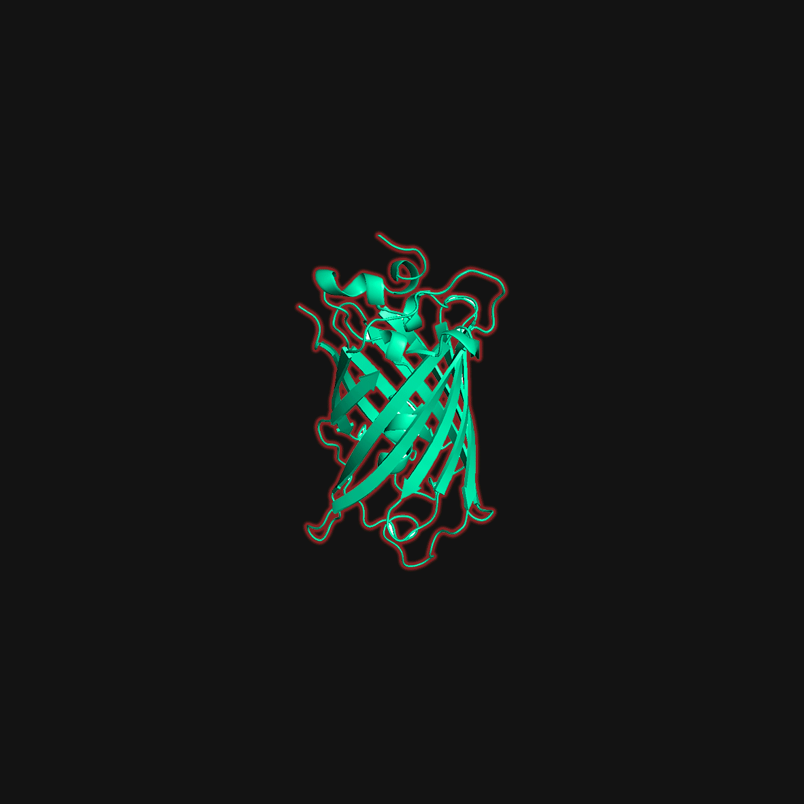
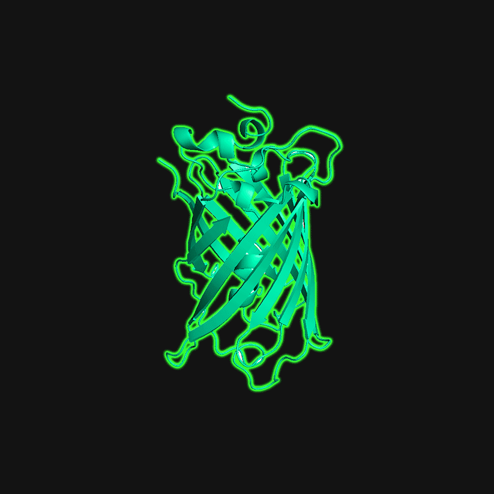
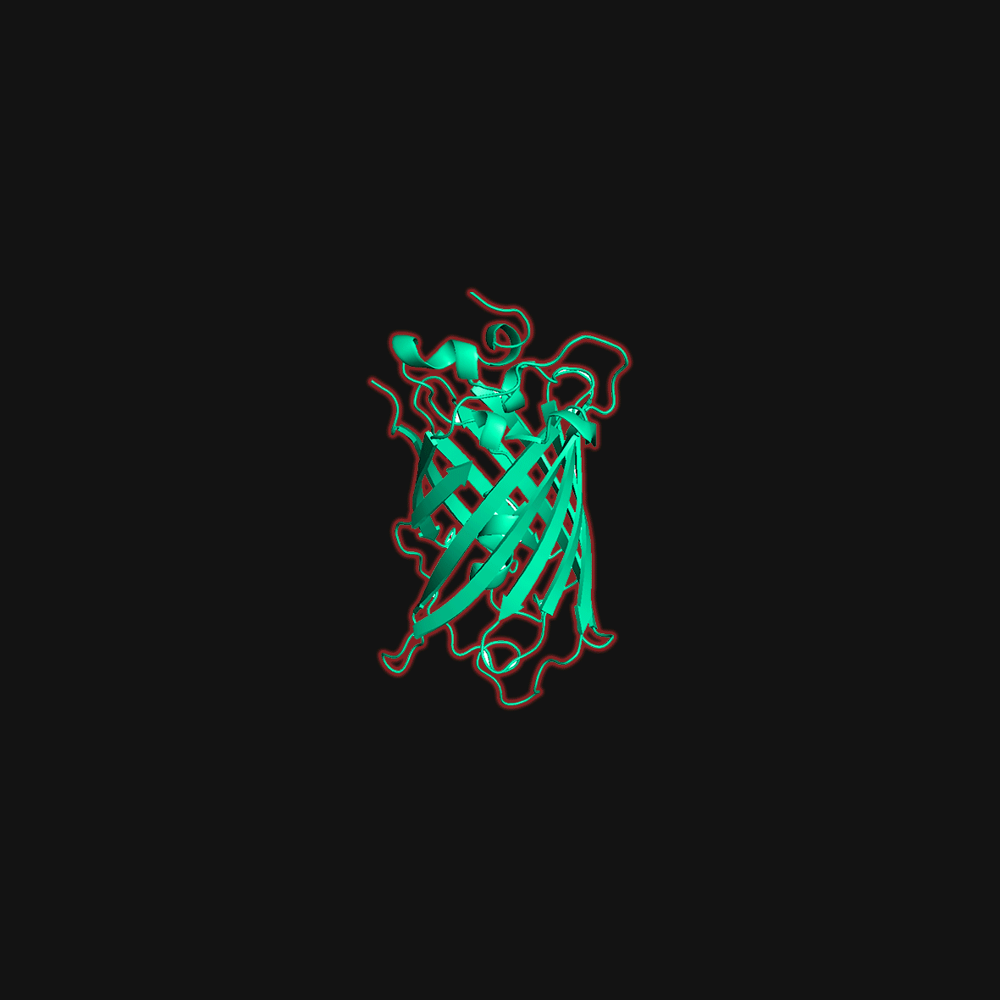
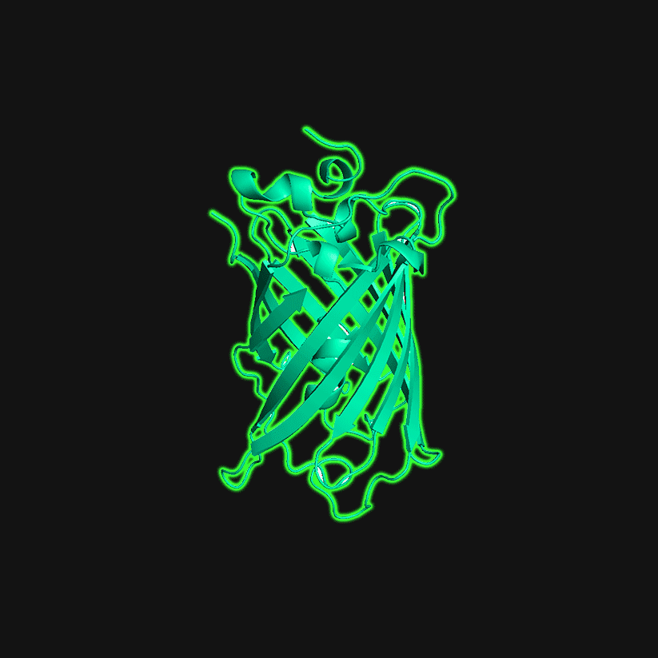

Project Description


 



1. What is Mutagenesis?
The process in which mutations arise in the genetic material of an organism is called mutagenesis. Mutations are changes in the base sequences of the genetic material. Mutagenesis alters the genetic information of an organism. Mutagenesis may occur either spontaneously or may be artificially induced. One of the most common examples cited is of UV rays or other ionising radiations that induce mutations.2.Why do we need Mutagenesis?
The applications of mutagenesis can be twofold – investigative and commercial. In investigative mutagenesis, the alterations are studied in terms of their pre and post mutation effects. Extensive studies of effects of specific amino acids on post translational modification and protein folding are studied in investigative mutagenesis. It is also an emerging field in diagnostics. Commercial mutagenesis sees practical applications. Improvement of crop nutrition, inducement of sustained resistance to pests and pathogens are the most commonly found applications today.3.What are the methods to accomplish Mutagenesis?
Mutagenesis may be random or site directed. Of the preferred latter method, PCR based and oligo based methods are employed. The major disadvantage of PCR based in vitro mutagenesis is the low stability of Taq DNA polymerase that results in various undesired mutations. In oligo based site directed mutagenesis, an oligo with the mutation polymerises in the presence of a complementary strand and hence, the mutations are induced.